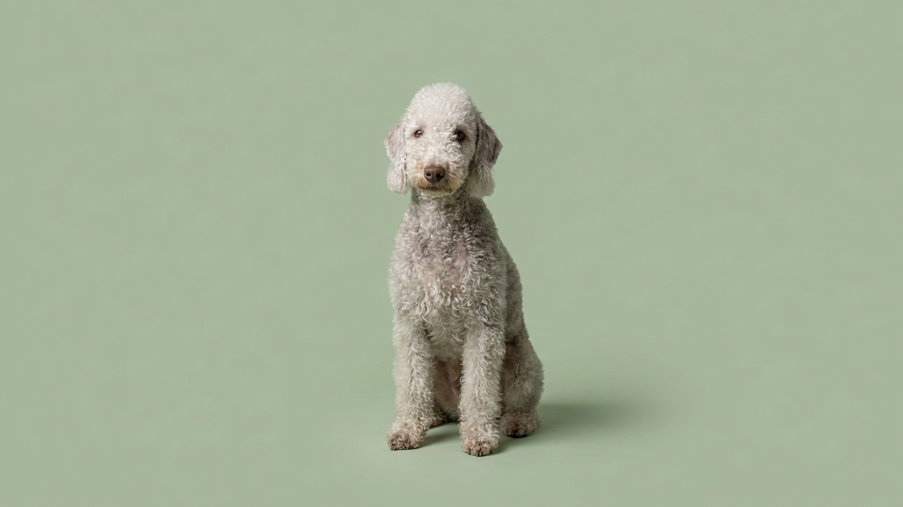

На фото бедлингтон-терьер похож на кудрявого ягнёнка — и от такого питомца ждут кроткого плюшевого нрава. Внутри мягкой шёрстки прячется быстрый, азартный и упрямый терьер, которого выводили ловить крыс и уходить в нору за зверем. Он почти не линяет и не пахнет псиной, но кудри требуют стрижки, а характер — уважения и границ. Разберём, каким бедлингтон будет дома, что делать с его шерстью и почему «овечья» внешность обманчива.
🐾 У вас бедлингтон-терьер?
AnimaLife соберёт уход под породу: к каким болезням есть склонность, что проверять по возрасту, чем кормить и когда пора к врачу. Бесплатно, прямо в мессенджере.
Собрать план ухода → Собрать в MAX →
У вас iPhone? AnimaLife есть в App Store
Кроткий силуэт скрывает настоящий терьерский темперамент: бедлингтон смел, азартен, самостоятелен и очень привязан к своей семье. Дома он ласковый и обаятельный компаньон, но у него есть охотничий движок, который включается мгновенно.
Кудрявая шерсть бедлингтона — это волос, а не типичная линяющая шубка: он почти не осыпается и мало пахнет, поэтому породу часто выбирают люди, чувствительные к шерсти в доме. Но за «необслуживаемую» её не примешь.
🐾 Ваш питомец — бедлингтон-терьер?
Заведите профиль в AnimaLife: приложение запомнит породу, возраст и вес и будет подсказывать по уходу именно для неё. Вопросы AI-ветеринару — круглосуточно и бесплатно.
Завести профиль → Завести в MAX →
У вас iPhone? AnimaLife есть в App Store
🐾 Понравился разбор?
Подпишитесь на канал — каждый день разбираем по одному тревожному симптому у кошек и собак: что в пределах нормы, а когда пора к врачу. Подпишитесь, чтобы не пропустить разбор, который может спасти здоровье вашего питомца.
Бедлингтон чувствителен и отзывчив на настроение хозяина. Грубость и жёсткое давление дают обратный эффект — он замыкается или упирается. Работает спокойное, последовательное обучение через поощрение и игру.
Ранняя социализация с людьми, собаками и городскими звуками особенно важна для этой породы — она сглаживает и задиристость, и настороженность. С детьми, которые умеют уважать собаку, бедлингтон обычно ладит хорошо. Порода вынослива и любит движение: короткие тренировки и новые маршруты держат её ум занятым, а азарт — в мирном русле.
Для города это удобный размер и характер: собака компактная, чистоплотная, не оставляет шерсть по всему дому. При регулярных прогулках и играх бедлингтон отлично живёт в квартире и не превращает её в поле боя.